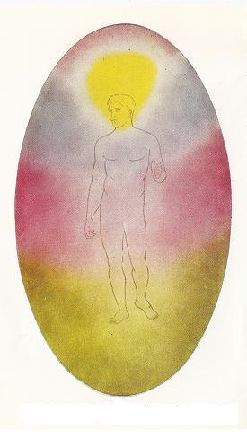
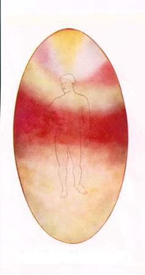
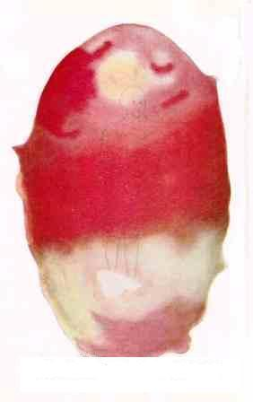

Emotional / Desire body
Composition and Structure
Historically the Emotional Body has been known in the West as the Astral Body, due to its starry, shimmering, scintillating appearance. Therefore a lot of references will contain the word 'Astral'. Sanskrit name - linga-sarira.1 Briefly, the astral body is a vehicle, to 'clairvoyant' sight not unlike the physical body, surrounded by an 'aura' of flashing colours, composed of matter of an order of fineness higher than that of physical matter, in which feelings, passions, desires and emotions are expressed and which acts as a bridge or medium of transmission between the physical brain and the mind, the latter operating in the still higher vehicle - the mind-body.
Astral body of Developed man

No names for these 'astral' states have yet been devised, so it is usual to
describe them, either by the grade or sub-plane; the finest being Number 1, the
coarsest Number 7, or by the corresponding physical grade. eg., we speak of
astral solid matter, meaning thereby the 7th or lowest variety: astral etheric
matter, meaning the 4th from the finest, and so on. 6
[This] body of man thus being composed of matter of all seven grades, it is
possible for him to experience all varieties of desire to the fullest possible
extent, the highest as well as the lowest. It is the peculiar type of response
posessed by astral matter which enables the astral matter to serve as the sheath
in which the Self can gain experience of sensation. 6
Astral matter,being much finer than physical matter, interpenetrates it. Every
physical 'atom', therefore floats in a sea of astral matter, which surrounds it
and fills every interstice in physical matter. It is well known that even in the
hardest substance no two atoms touch one another, the space between two adjacent
atoms being in fact enormously larger than the atoms themselves. 6 {like a solar
system - Mart}.
Colours
To 'clairvoyant' sight one of the principal features of an
astral body consists of the colours which are constantly playing through it,
these colours corresponding to, and being the expression in astral matter of
feelings, passions and emotions. All known colours, and many which are at
present unknown to us, exist upon the higher planes of nature, but as we rise
from one stage to another they become more delicate and more luminous, so that
they may be described as higher octaves of colour.
As it is not possible to portray these octaves physically on paper, the above
facts should be borne in mind when considering the coloured 'illustrations' of
the astral body referred to below.
the following is a list of the principal colours and the emotions of which they
are an expression:-

Black: in thick clouds: hatred and malice.Astral body of Savage

Surprise is shown by a sharp constriction of the mental body, usually
communicated to both the astral and physical bodies, accompanied by an increased
glow of the band of affection if the surprise is a pleasant one, and by an
increase of brown and grey if the surprise is an unpleasant one. The
constriction often causes unpleasant feelings, affecting sometimes the solar
plexus, resulting in sinking and sickness, and sometimes the heart centre,
causing palpitation and even death.
It will be understood that, as human emotions are hardly ever unmixed, so these
colours are seldom perfectly pure, but more usually mixtures. Thus the purity of
many colours is dimmed by the hard brown-grey ofselfishness, or tinged with the
deep orange of pride. The yellow of intellect, the rose of affection, and the
blue of devotion are always found in the upper part of the astral body: the
colours of selfishness, avarice, deceit and hatred are in the lower part: the
mass of sensual feeling floats usually between the two.
Each quality, expressed as a colour, has its own special type of astral matter,
and the average position of these colours depends upon the specific gravity of
the respective grades of matter.
In order to realise the appearance of the astral body, it must be borne on mind
that the particles of which it is composed are always in rapid motion: in the
vast majority of cases the clouds of colour melt into one another and are all
the while rolling over one another, appearing and disappearing as they roll, the
surface of the luminous mist resembling somewhat the surface of violently
boiling water. The various colours therefore, by no means retain the same
positions, though there is a normal position to which they tend to return. 6
Types of body
Undeveloped. - A very large proportion of sensuality: deceit, selfishness and greed are conspicuous: fierce anger is implied by smears and blots of dull scarlet: very little affection appears, and such intellect and religious feeling as exist are of the lowest possible kind. The outline is irregular and the colours blurred, thick and heavy. The whole body is evidently ill-regulated, confused and uncontrolled. Average man. - Sensuality is much less though still prominent and there is some capability of deceit for personal ends, though the green is beginning to divide into two distinct qualities, showing that cunning is gradually becoming adaptability. Anger is still marked: affection, intellect and devotion are more prominent and of a higher quality. The colours as a whole are more clearly defined and distinctly brighter, though none of them are perfectly clear. The outline of the body is more defined and regular. Developed man. - Undesirable qualities have almost entirely disappeared: across the top of the body there is a strip of lilac, indicating spiritual aspiration: above and enveloping the head there is a cloud of the brilliant yellow of intellect: below that there is a broad belt of the blue of devotion: then across the trunk there is a still wider belt of the rose of affection, and in the lower part of the body a large amount of the green of adaptability and sympathy finds its place. The colours are bright, luminous, in clearly marked bands, the outline is well-defined, and the whole astral body conveys the impresssion of being orderly and under perfect control.
Functions
The functions of the astral body may be roughly grouped under
three headings:-
1. To make sensation possible.
2. To serve as a bridge between mind and physical matter.
3. To act as an independent vehicle of consciousness and action.
When man is analysed into "principles" ie. into modes of manifesting life, the
four lower principles, sometimes termed the "Lower Quaternary" [they] are:-
1. Physical Body -2. Etheric Body -3. Prana, or Vitality - 4. Kama
(Sanskrit), or Desire
The fourth principle, Kama, is the life manifesting in the astral body and [is]
conditioned by it: its characteristic is the attribute of feeling, which in
rudimentary form is sensation, and in complex form emotion, with many grades in
between these two. This is sometimes summed up as desire, that which is
attracted or repelled by objects, according as they give pleasure or pain.
Kama thus includes feelings of every kind, and might be described as the
passional and emotional nature. It comprises all animal appetites, such as
hunger, thirst, sexual desire: all passions, such as the lower forms of love,
hatred, envy, jealousy; it is the desire for sentient existence, for experience
of material joys.
Kama is the brute in us, the force which most avails to keep us bound to earth
and to stifle in us all higher longings by the illusions of sense.
For our purposes desire and emotion are frequently used as practically
synonymous: strictly, however, emotion is the product of desire and intellect.
Passing now to the second function of the astral body - to act as a bridge
between mind and physical matter - we note that an impact on the physical senses
is transmitted inwards by Prana, [and] becomes a sensation by the action of the
sense-centres, which are situated in [the astral body], and is perceived then by
Manas, or Mind. Thus without the general action through the astral body there
would be no connection between the external world and the mind of man, no
connection between physical impacts and the perception of them by the mind.
Whenever we think, we set in motion the mental matter within us; the vibrations
thus generated are transferred to the matter of our astral body, the astral
matter affects the etheric matter, this in turn, acting on the dense physical
matter, the grey matter of the brain.
The astral body is thus a bridge between our physical and our mental life,
serving as a transmitter of vibrations both from physical to mental and from
mental to physical, and is, in fact, principally developed by this constant
passage of vibrations to and fro.
Thought forms
The mental and astral bodies are those chiefly concerned with
the production of what are called thought-forms. The term thought- form is not
wholly accurate, because the forms produced may be composed of mental matter,
or, in the vast majority of cases, of both astral and mental matter.
A purely intellectually and impersonal thought - such as one concerned with
algebra or geometry - would be confined to mental matter. If, on the other hand,
the thought has in it something of selfish or personal desire, it will draw
round itself astral matter in addition to the mental. If, furthermore, the
thought be of a spiritual nature, if it be tinged with love and aspiration, or
deep and unselfish feeling, then there may also enter in some of the splendour
and glory of the buddhic plane.
Every definite thought produces two effects: first, a radiating vibration:
second, a floating form.
The vibration set up in and radiating from the mental body is accompanied with a
play of colour which has been described as like that in the spray of a waterfall
as the sunlight strikes it, raised to the nth degree of colour and delicacy.
This radiating vibration tends to reproduce its own rate of motion in any mental
body on which it may impinge: ie to produce thoughts of the same type as those
from which the vibration originated. It should be noted that the radiating
vibration carries, not the subject of the thought, but its character.
The power of the vibration to produce such effects depends principally upon the
clearness and definiteness of the thought-emotion, as well, of course, as upon
the amount of force put into it.
The distance to which a thought-wave can radiate effectively also depends upon
the opposition with which it meets. Waves in the lower types of astral matter
are usually soon deflected or overwhelmed by a multitude of other vibrations at
the same level, just as a soft sound is drowned in the roar of a city.
If made of the finer kinds of matter, it will be of great power and energy, and
may be used as a most potent agent when directed by a strong and steady will.
Miscellaneous effects
A young child has a white or comparatively colourless aura, the colours beginning to show only as the qualities develop. The astral body of a child is often a most beautiful object - pure and bright in its colours, free from the stains of sensuality, avarice, ill-will and selfishness. In the case of intense anger, the ordinary background of the astral body is obscured by coils or vortices of heavy, thunderous masses of sooty blackness, lit up from within by the lurid glare of active hatred. Wisps of the same dark cloud are to be seen defiling the whole astral body, while the fiery arrows of uncontrolled anger shoot among them like flashes of lightning. These terrible flashes are capable of penetrating other astral bodies like swords and thus inflicting injury upon other people. A sudden shock of terror will in an instant suffuse the whole body with a curious livid grey mist, while horizontal lines of the same hue appear, but vibrating with such violence as to be hardly recognisable as separate lines. The result is indescribably ghastly: all light fades out for the time from the body and the whole grey mass quivers like a jelly. (A flood of emotion does not greatly affect the mental body, though for a time it may render it almost impossible for any activity from the mental body to come through into the physical brain, because the astral body, which acts as a bridge between the mental body and the brain, is vibrating so entirely at one rate as to be incapable of conveying any undulation which is not in harmony with it.) When an ordinary man falls 'in love', the astral body is so completely transformed as to make it scarcely recognisable as belonging to the same person. Selfishness, deceit and avarice vanish, and the lowest part of the oval is filled with a large development of animal passions. The green of adaptability has been replaced by the peculiar brownish-green of jealousy, and the extreme activity of this feeling is shown by bright scarlet flashes of anger, which permeate it. But the undesirable changes are more than counterbalanced by the splendid band of crimson which fills so large a part of the oval. This is for the time, a dominant characteristic, and the whole astral body glows with its light. Under its influence the general muddiness of the ordinary astral body has disappeared, and the hues are all brilliant and clearly marked, good and bad alike. It is an intensification of the life in various directions. The blue of devotion is also distinctly improved, and even a touch of pale violet appears at the summit of the ovoid, indicating a capacity of response to a really high and unselfish ideal. The yellow of intellect, however, has entirely vanished for the time - a fact which the cynical might consider as characteristic of the condition ! The astral body of an irritable man usually shows a broad band of scarlet as a prominent feature and, in addition, the whole astral body is covered with floating flecks of scarlet.
In the case of a miser; avarice, selfishness, deceit and adaptability are naturally intensified, but sensuality is diminished. The most remarkable change, however, is the curious series of parallel lines across the oval, giving the impression of a cage. The bars are a deep brown in colour, almost burnt sienna. Deep depression produces an effect in grey, instead of brown, very similar to that of the miser. The result is indescribably gloomy and depressing to the observer. No emotional condition is more infectious than the feeling of depression. In the case of a non-intellectual man who is definitely religious, the astral body assumes a characteristic appearance. A touch of violet suggests the possibility of response to a high ideal. The blue of devotion is unusually well-developed, but the yellow of intellect is scanty. There is a fair proportion of affection and adaptability, but more than the average of sensuality, and deceit and selfishness are also prominent. The colours are irregularly distributed, melting into one another, and the outline is vague, indicating the vagueness of the devotional man's conceptions.
Extreme sensuality and the devotional temperament are frequently seen in association: perhaps because these types of men live chiefly in their feelings, being governed by them instead of trying to control them by reason. A great contrast is shown by a man of a scientific type. Devotion is entirely absent, sensuality is much below the average, but the intellect is developed to an abnormal degree. Affection and adapability are small in quantity and poor in quality. A good deal of selfishness and avarice is present and also some jealousy. A huge cone of bright orange in the midst of the golden yellow of intellect indicates pride and ambition in the knowledge that has been acquired. The scientific and orderly habit of mind causes the arrangement of the colours to fall into regular bands, the lines of demarcation being quite definite and clearly marked.